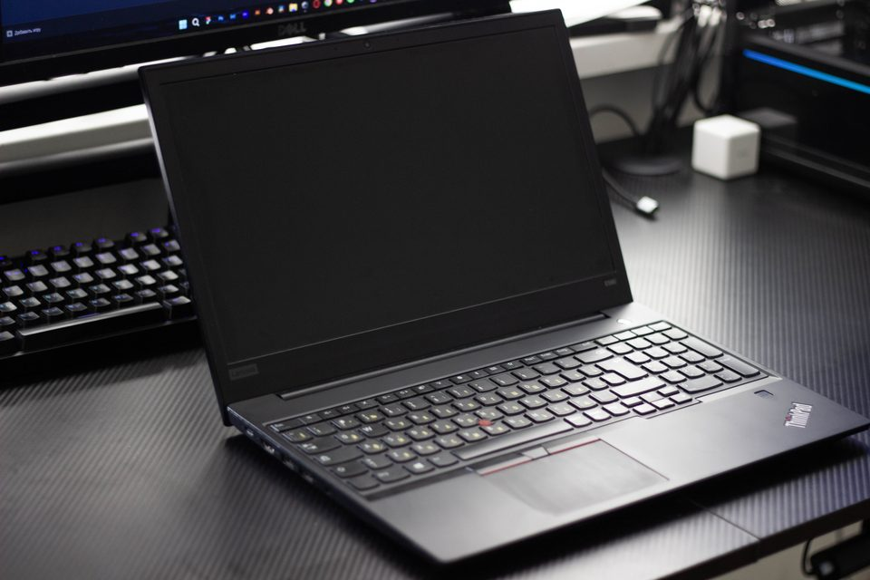
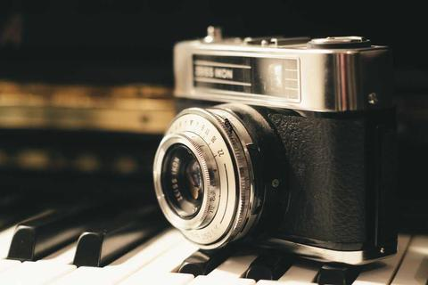
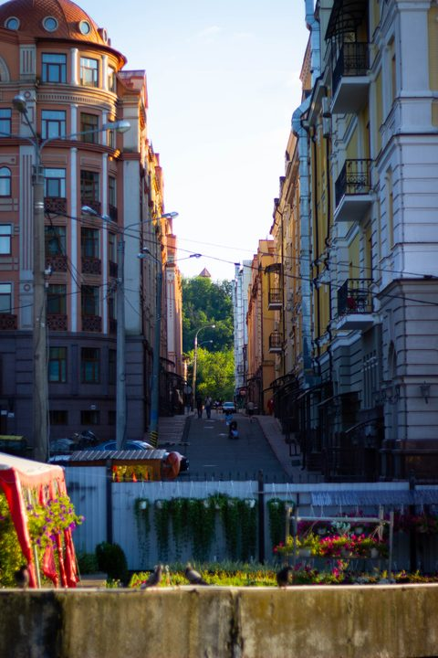
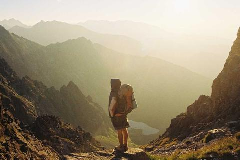

Плівка чи цифра: мій перший рік з камерою
Чому я знімаю на обидві і що кожна з них навчила мене бачити.
Нотатки про веб-розробку, навчання і фотографію. Пишу, коли щось нарешті запрацювало.

= 62rem) 40rem, 100vw" width="960" height="640" alt="Робоче місце: монітор, клавіатура, планшет і блокнот на темному столі">Завдання звучало просто: три сторінки, які однаково добре виглядають на телефоні й на комп'ютері. На практиці це означало щоразу ставити собі питання: «а що буде, якщо звузити вікно до 320 пікселів?»
Я почав з найвужчого екрана. Базові стилі — для телефона: одна колонка, нічого зайвого.
Ширші макети додаються медіазапитами з min-width. Так телефону дістається
менше роботи, а складні правила вмикаються лише там, де є місце.
Головна сторінка — це сітка з іменованими областями. На телефоні блоки стоять стовпчиком,
від 900 пікселів з'являється бічна колонка з профілем, від 1100 — третя колонка.
Змінюється лише grid-template-areas, HTML лишається тим самим.
.home-grid {
display: grid;
grid-template-columns: minmax(0, 1fr);
grid-template-areas: "about" "profile" "projects";
}
Ця сторінка блогу не має жодного медіазапиту для каркаса. Кожна колонка отримує
flex-basis: calc((60rem - 100%) * 999). Якщо контейнер ширший за 60rem,
число від'ємне, і браузер бере нуль — колонки стають у рядок. Якщо вужчий —
число величезне, і кожна колонка переноситься на свій рядок.
Ламайте там, де ламається вміст, а не пристрій.
Наступний крок — замінити фото-заглушки своїми кадрами, дописати сторінки окремих записів і перенести сайт на власний домен.

= 62rem) 12rem, 100vw" width="480" height="320" loading="lazy" alt="Стара плівкова камера на клавішах піаніно">Чому я знімаю на обидві і що кожна з них навчила мене бачити.

= 62rem) 12rem, 100vw" width="480" height="320" loading="lazy" alt="Вузька міська вулиця з цегляними будинками">Три вправи, які допомогли мені знімати людей у місті без страху.

= 62rem) 12rem, 100vw" width="480" height="320" loading="lazy" alt="Мандрівник з рюкзаком у туманній гірській долині">Тиждень у горах з фіксом 35 мм: що вийшло і чого не вистачало.